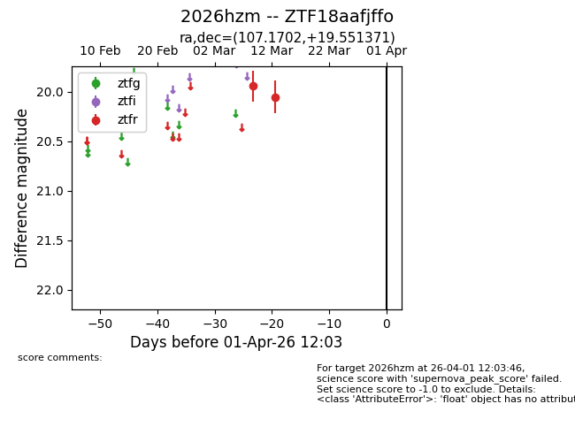
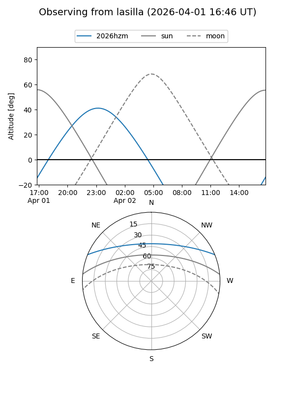
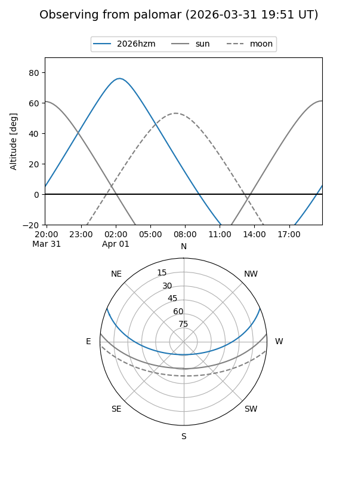

2026hzm
Target 2026hzm at 2026-04-01 12:07
Aliases and brokers:
FINK: link
Lasair: link
ALeRCE: link
TNS: link
YSE: link
alt names
ZTF18aafjffo (ztf,fink_ztf)
2026hzm (tns,yse)
Coordinates:
equatorial (ra, dec) = 107.1702,+19.55137
equatorial (HMS+DMS) = 07:08:40.86,+19:33:04.94
galactic (l, b) = (197.1525,+12.45281)
Flags:
Photometry:
last ztfr=20.05
2 ztfr detections
Lightcurve

Visibility


Additional plots